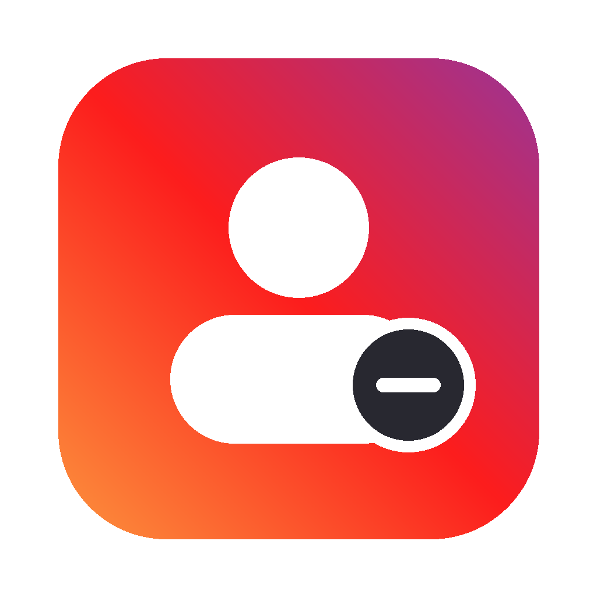

IG CleaningA free Mac app that finds who doesn't follow you back — or who you never talk to — protects influencers and friends, and unfollows the rest slowly enough that Instagram doesn't mind.
Free & open source · macOS 11+ · Apple Silicon and Intel · 18 MB · Source on GitHub · How to install
Everyone you follow, who follows you back and when you last messaged them.
Verified accounts and anyone over 10,000 followers are shielded. A ★ whitelist keeps friends safe.
Click, ⇧-click for a range, ⇧+arrows to extend, ⌘A for all.
One every 20–40 s, max 60/hour and 150/day. At the first warning it stops for 24 h.
Photo, name and @username of everyone removed, with a Follow again button.
You log in on instagram.com itself. The app never sees your password; data stays on your Mac.
About a minute. Step 3 happens only the first time.
Open IG-Cleaning.dmg and drag IG Cleaning onto the Applications folder.
macOS says Apple could not verify “IG Cleaning” is free of malware. It says that about every app that isn't notarized by Apple. Click Done, not Move to Trash.
Open System Settings → Privacy & Security, scroll down to Security and click Open Anyway next to “IG Cleaning” was blocked. Confirm with your password or Touch ID. From then on it opens with a double-click.
Log in on the Instagram window and press Analyze my account. Pick who to remove and press Unfollow.
Why the warning? Notarizing an app needs a paid Apple developer account ($99 a year). This is a free side project, so it isn't notarized. The full source code is on GitHub, and you can check that your download is exactly the file I built. In Terminal:
shasum -a 256 ~/Downloads/IG-Cleaning.dmg
should print f55d68d81a9c1e6aa7b22944455e636bd3f4bb0ab92f267afea2c02047a810b3
xattr -dr com.apple.quarantine "/Applications/IG Cleaning.app"